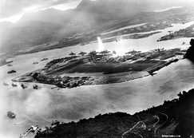
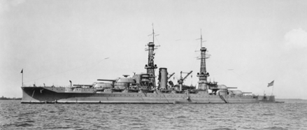

United States in the Pacific
Before the attack on Pearl Harbor, Japan had already begun trading blows as early as 1937 with attacks on river gunboat USS Panay. In 1941, Japan launched its attack on Pearl Harbor. The attack on pearl harbor woke America up, and thus began the war machine. Over the course of the war, the United States would produce several thousand major warships and hundreds of thousands of tons of shipping, several times what Japan would produce over the war. However, militarily, Pearl Harbor was in fact a major hit. Several US battleships including the USS Arizona and light cruisers were sunk and hundreds of aircraft were damaged or destroyed. The loss of life hit heavier at over 2,000 lives lost.
After Pearl Harbor, the United States began its campagin. Only a year after Pearl Harbor began one of the most iconic battles of the pacific theater, the Battle of Midway. It ended as a major victory for the allies. The main gain from this battle was the Japanese loss of four of their aircraft carriers. As this theater was surprisingly primarily a battle of the air, rather than the sea.